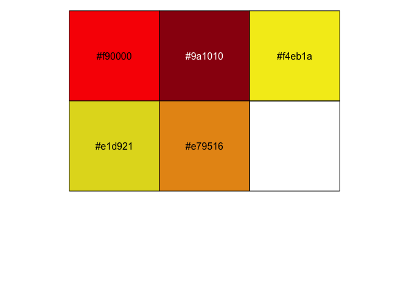

New Year’s Wishes
Here’s a ggplot2 holiday card wishing you a better 2021! Explore how to create a festive holiday plot in R with ggplot2. Understanding the preparation of data for plotting, using geom_circle, adding blur effects, and customizing text. This exercise enhances your skills in working with ggplot2 and thinking critically about data structures and visual outputs.
It’s time for a new year, and I think we are all ready for it! At least I am.
This is just a short post, with a ggplot2 holiday card wishing you all a better 2021 than 2020! Let’s face it, there not much needed for that to happen, and with vaccines being distributed I have hopes.
I hope the New Year, at some point, makes it possible to start going to conferences again and that I can get to meet ore R-aficionados when the time allows.
As previous years, I wanted to make a holiday card for you all in ggplot2. You may ask why I keep plotting these ridiculous things in ggplot2, but the answer is quite simple: why not? Other than being fun, it’s also a nice exercise in thinking about and exploring how data need to look to create a certain output. I find these holiday cards help me understand the geoms, how ggplot2 works, and how to think about grid structures.
Making a holiday card
The first thing I do when starting a new plot, is make sure I have a decent colour palette going. I browse through hex palettes for palettes I like, and this time a choose one called Chinese New Year - Rooster Color Palette, that I thought might work.
# Define a palette object
pal <- c("#f90000", "#9a1010", "#f4eb1a", "#e1d921", "#e79516")
# Have a look at the colours
scales::show_col(pal)

Next, I had in mind a simple image, with some blurred coloured circles in the background of some white text.
So I had so make a data.frame with the basis of some circles.
I knew I wanted to use ggforce::geom_circle for this, which would need x and y coordinates for the center of the circle and the radius.
So I needed a data.frame with that information, and also a colour for each circle.
library(tidyverse)
# Choose the number of circles to make
n_circles <- 15
# Create data.frame with coordinate, radius and colour drawn by random.
circles <- tibble(
x = sample(1:20, n_circles),
y = sample(1:20, n_circles),
r = sample(seq(.5, 1.5, length.out = 20), n_circles),
c = sample(pal, n_circles, replace = TRUE)
)
circles
## # A tibble: 15 x 4
## x y r c
## <int> <int> <dbl> <chr>
## 1 14 3 1.18 #9a1010
## 2 1 13 0.816 #9a1010
## 3 17 19 1.29 #f90000
## 4 19 7 0.868 #f4eb1a
## 5 18 15 1.24 #e1d921
## 6 4 10 1.39 #f90000
## 7 3 2 0.605 #e1d921
## 8 9 6 1.08 #9a1010
## 9 12 11 1.03 #e1d921
## 10 2 8 0.5 #e79516
## 11 16 20 0.553 #f4eb1a
## 12 8 1 0.974 #f4eb1a
## 13 15 12 0.711 #f90000
## 14 20 4 0.763 #9a1010
## 15 11 5 1.5 #9a1010
After that, I needed to do some stuff to make the circles blurred. I’ve opted for a simple solution, where I’d overlay circles of decreasing sizes on top of each other with high transparency, which should look like a blurring effect. To achieve that, I decided to keep to my tibble and tidyverse way of doing things. First, I defined a separate tibble with the different sizes I want the radii to have for the blurring.
transp <- tibble(
size = seq(from = 1, to = 1.9, length.out = 10)
)
transp
## # A tibble: 10 x 1
## size
## <dbl>
## 1 1
## 2 1.1
## 3 1.2
## 4 1.3
## 5 1.4
## 6 1.5
## 7 1.6
## 8 1.7
## 9 1.8
## 10 1.9
Using this, I needed to make sure that each circle (every row in the circles tibble) gets this blurring working.
The best way I know how, is nesting the data by everything but radius, then merge the radius tibble with the transparency tibble, and unnest again.
Lastly I can multiply the radius with the size, and get a large data.frame with lots of circles of different sizes, but many sharing a center and colour.
# Nesting data moved all non-grouped columns into a "data" column
circles %>%
nest_by(x, y, c)
## # A tibble: 15 x 4
## # Rowwise: x, y, c
## x y c data
## <int> <int> <chr> <list<tbl_df[,1]>>
## 1 1 13 #9a1010 [1 × 1]
## 2 2 8 #e79516 [1 × 1]
## 3 3 2 #e1d921 [1 × 1]
## 4 4 10 #f90000 [1 × 1]
## 5 8 1 #f4eb1a [1 × 1]
## 6 9 6 #9a1010 [1 × 1]
## 7 11 5 #9a1010 [1 × 1]
## 8 12 11 #e1d921 [1 × 1]
## 9 14 3 #9a1010 [1 × 1]
## 10 15 12 #f90000 [1 × 1]
## 11 16 20 #f4eb1a [1 × 1]
## 12 17 19 #f90000 [1 × 1]
## 13 18 15 #e1d921 [1 × 1]
## 14 19 7 #f4eb1a [1 × 1]
## 15 20 4 #9a1010 [1 × 1]
Once the data is nested, the radius column is all alone, nested within the data column of the tibble.
This way we can safely merge the transp object with that data, which will duplicate the radius number for every row in the transp object.
Here, we must make sure that within the mutate the output of the merge is nested within a list().
The data colum is a so-called list-column, and as such the output of any manipulation of it must also be a list.
# Merge the data column with the transp object,
# make sure it outputs into a list to work with nested data
circles %>%
nest_by(x, y, c) %>%
mutate(data = list(merge(data, transp)))
## # A tibble: 15 x 4
## # Rowwise: x, y, c
## x y c data
## <int> <int> <chr> <list>
## 1 1 13 #9a1010 <df[,2] [10 × 2]>
## 2 2 8 #e79516 <df[,2] [10 × 2]>
## 3 3 2 #e1d921 <df[,2] [10 × 2]>
## 4 4 10 #f90000 <df[,2] [10 × 2]>
## 5 8 1 #f4eb1a <df[,2] [10 × 2]>
## 6 9 6 #9a1010 <df[,2] [10 × 2]>
## 7 11 5 #9a1010 <df[,2] [10 × 2]>
## 8 12 11 #e1d921 <df[,2] [10 × 2]>
## 9 14 3 #9a1010 <df[,2] [10 × 2]>
## 10 15 12 #f90000 <df[,2] [10 × 2]>
## 11 16 20 #f4eb1a <df[,2] [10 × 2]>
## 12 17 19 #f90000 <df[,2] [10 × 2]>
## 13 18 15 #e1d921 <df[,2] [10 × 2]>
## 14 19 7 #f4eb1a <df[,2] [10 × 2]>
## 15 20 4 #9a1010 <df[,2] [10 × 2]>
Once they are merged, we can unnest and see that our new circles object has lots of new rows!
# Unnest the data, so that a large tibble exposed (lots of rows!)
circles %>%
nest_by(x, y, c) %>%
mutate(data = list(merge(data, transp))) %>%
unnest(data)
## # A tibble: 150 x 5
## # Groups: x, y, c [15]
## x y c r size
## <int> <int> <chr> <dbl> <dbl>
## 1 1 13 #9a1010 0.816 1
## 2 1 13 #9a1010 0.816 1.1
## 3 1 13 #9a1010 0.816 1.2
## 4 1 13 #9a1010 0.816 1.3
## 5 1 13 #9a1010 0.816 1.4
## 6 1 13 #9a1010 0.816 1.5
## 7 1 13 #9a1010 0.816 1.6
## 8 1 13 #9a1010 0.816 1.7
## 9 1 13 #9a1010 0.816 1.8
## 10 1 13 #9a1010 0.816 1.9
## # … with 140 more rows
Then the size column can be multiplied with the radius column, to get circles of different sizes.
# multiply r with the size to get the "true" radius.
circles <- circles %>%
nest_by(x, y, c) %>%
mutate(data = list(merge(data, transp))) %>%
unnest(data) %>%
mutate(r = r*size)
circles
## # A tibble: 150 x 5
## # Groups: x, y, c [15]
## x y c r size
## <int> <int> <chr> <dbl> <dbl>
## 1 1 13 #9a1010 0.816 1
## 2 1 13 #9a1010 0.897 1.1
## 3 1 13 #9a1010 0.979 1.2
## 4 1 13 #9a1010 1.06 1.3
## 5 1 13 #9a1010 1.14 1.4
## 6 1 13 #9a1010 1.22 1.5
## 7 1 13 #9a1010 1.31 1.6
## 8 1 13 #9a1010 1.39 1.7
## 9 1 13 #9a1010 1.47 1.8
## 10 1 13 #9a1010 1.55 1.9
## # … with 140 more rows
Then it’s all about plotting the data. Initially, I wanted a small animation like blinking of the circles, but I’ve decided to leave it as is for now.
Loading in ggforce, we get the geom_circle available.
I’m also using a small colour hack a found a long time ago.
When I have the colours in the data.frame directly, as it’s own column, I usually use the identity function (I()) directly in the ggplot2 calls, rather than scale_colour_identity.
It’s just something I got used to.
library(ggforce)
alpha = .1
ggplot(circles, aes(fill = I(c))) +
# Add all the circles
geom_circle(alpha = .1, colour = NA,
aes(x0 = x, y0 = y, r = r)) +
# Add text at the center, but a little higher (+5)
geom_text(aes(x = mean(circles$x),
y = mean(circles$y)+5,
label = "Happy New Year"),
family = "Great Vibes",
colour = "#fefefe",
size = 14,
show.legend = FALSE) +
# Add text at the center but a little loswer (-5)
geom_text(aes(x = mean(circles$x),
y = mean(circles$y)-5,
label = "Adios 2020!"),
family = "Great Vibes",
size = 8,
colour = "#fefefe",
show.legend = FALSE) +
theme_void() +
theme(plot.background = element_rect(fill="black")) +
NULL

2020-new-years-wishes,
author = "Dr. Mowinckel",
title = "New Year's Wishes",
url = "https://drmowinckels.io/blog/2020/new-year-s-wishes/",
year = 2020,
doi = "https://www.doi.org/10.5281/zenodo.13273510",
updated = "Nov 19, 2025"
}